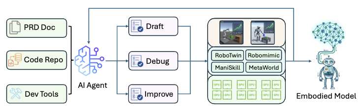
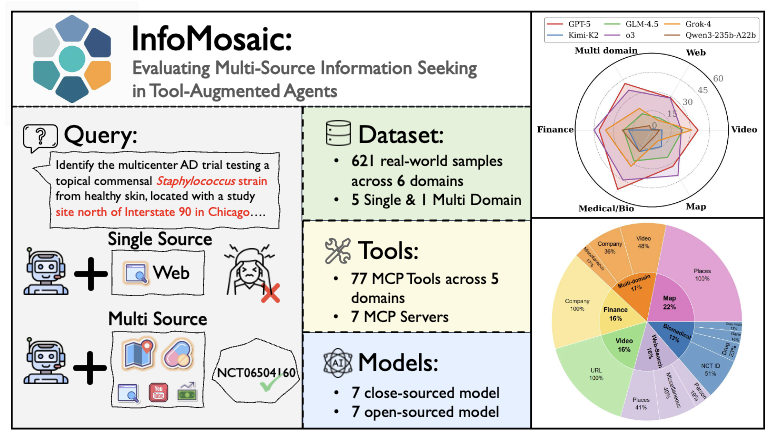
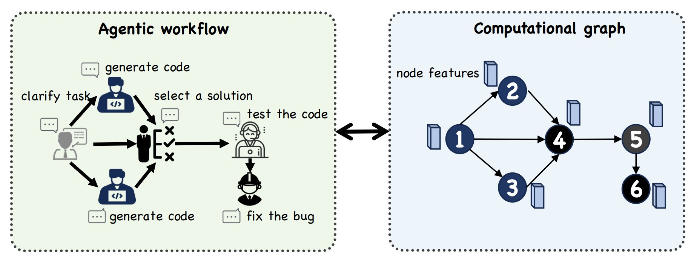
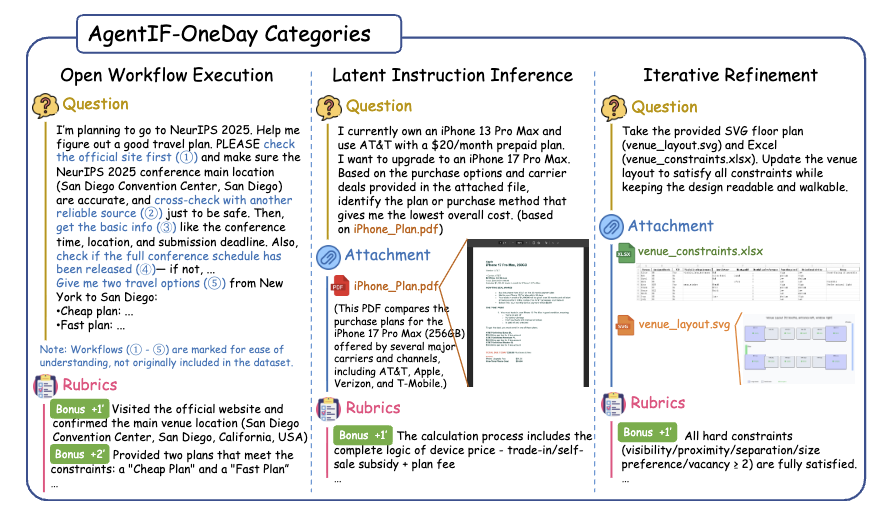
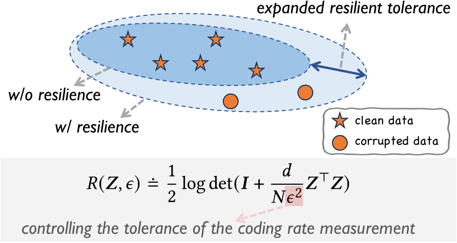

Physical Agents

EmboCoachPreprint
From Digital to Physical: Digital Agents as Autonomous Coaches for Physical Intelligence
Integrating AI agents into embodied robot development, with recursive self-improvement.
Building digital and physical agents.
I am a PhD student at Shanghai Jiao Tong University, supervised by Prof. Siheng Chen. My research interests lie in Recursive Self-Improvement for Digital and Physical Agents, with a current focus on developing emboddied foundation models and integrating AI agents into their iterations.
If you are interested in collaborating, feel free to contact me at youngsoul0731@gmail.com.
InfoMosaic-Bench has been accepted to ICLR 2026.
PublicationFLORA has been accepted to LoG 2025.
PublicationERASE has been accepted to CIKM 2024.
PublicationPublications and preprints across three research directions.

Integrating AI agents into embodied robot development, with recursive self-improvement.
Integrating AI agents into embodied robot development, with recursive self-improvement.

Evaluating how tool-augmented agents seek and integrate information across multiple sources.

Accelerating agentic workflow optimization by predicting its performance.

A task-level benchmark for evaluating general AI agents’ instruction following in daily scenarios.

Error-resilient graph representation learning for robust learning under label noise.
School of Electronic Engineering
Sep 2021 — Jun 2025